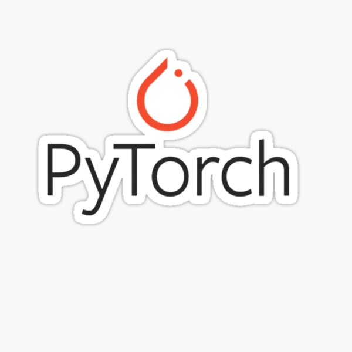
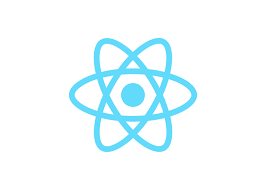
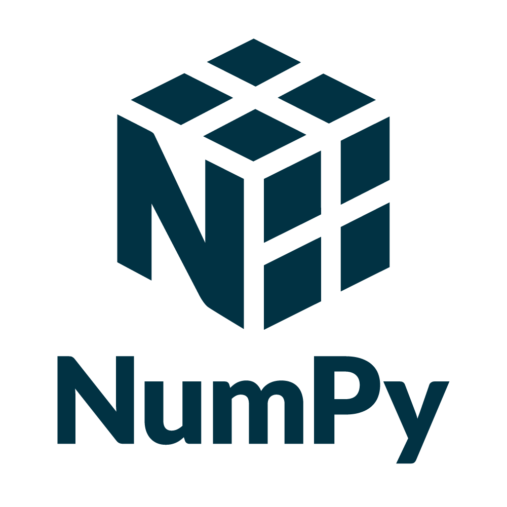
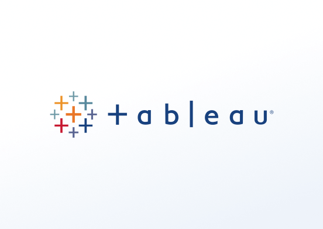

Skills




I’m Rutvik, a Data Scientist with a background in Statistics and real-world AI and ML experience across e-commerce, insurance, and manufacturing. I’m passionate about working with data that actually drives decisions and improves user or business outcomes statistically. My interests lie in building AI-powered tools, automating repetitive tasks, and creating systems that save people time. Outside of work, you’ll usually find me watching sports or playing a good game of cards.
Data Scientist - Bangalore, IN | Jan 2022 – Aug 2023
Graduate Teaching Assistant — Unsupervised ML - Boston, MA | Jan 2025 – Apr 2025
Data Scientist Co-Op — San Jose, CA | Jun 2024 – Dec 2024
Data Analyst Intern — Mumbai, IN | May 2021 – Jun 2021
An AI-powered assistant that generates Python code for data analysis tasks using LangGraph and Streamlit.
Tools: Python, LangGraph, Streamlit, OpenAI, Llama, Gemini
A deep learning-based recommendation system using user reviews to predict ratings and rank relevant products.
Tools: PyTorch, Python, Streamlit
A web application that generates and sends personalized cold emails to recruiters and managers without opening Gmail or Outlook. It customizes email content based on job descriptions by leveraging an AI agent through API calls.
Tools: React.js, API Integration, Fine-Tuning AI, Prompt Engineering
Explored feature extraction using autoencoders for image classification and reconstruction. Compared standalone and composite models, with the composite model achieving superior performance.
Tools: Python, Scikit-learn, Autoencoders, Supervised Learning
Master of Science in Data Science | Boston, MA | Sep 2023 – Present
GPA: 4.0 / 4.0
Master of Science in Applied Statistics and Analytics | Mumbai, IN | Jul 2020 – May 2022
GPA: 3.73 / 4.0
Bachelor of Science in Statistics | Pune, IN | Jun 2017 – Apr 2020
GPA: 3.71 / 4.0